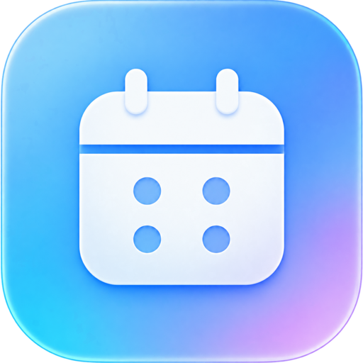
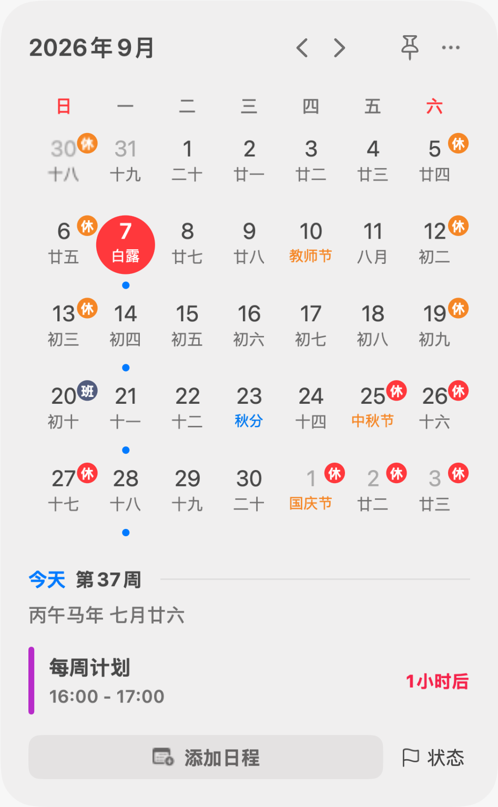
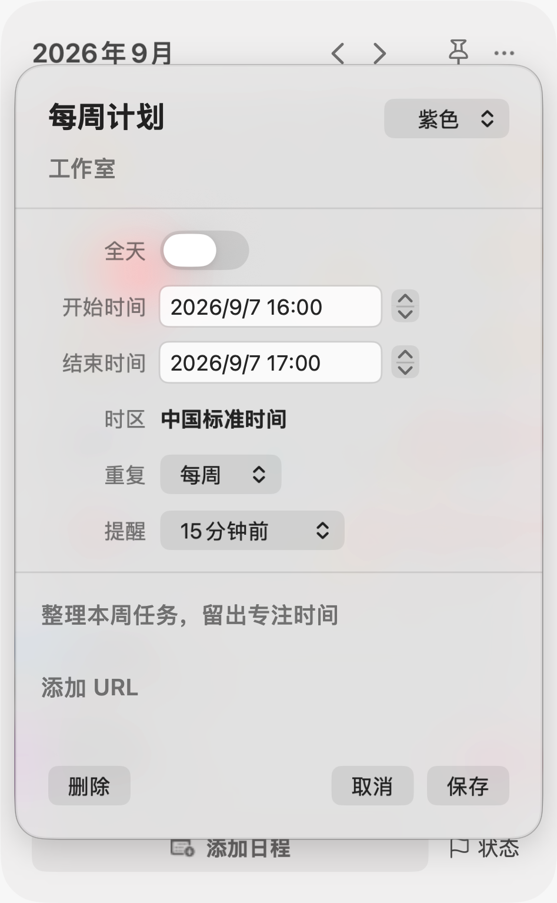
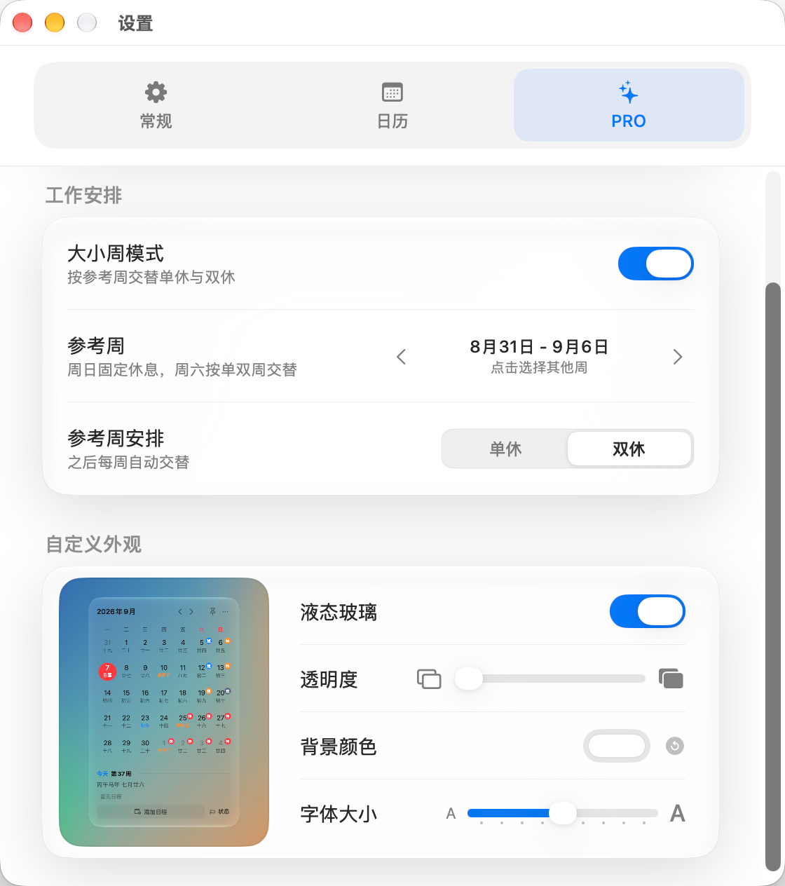

熟悉的日子，都在。
农历、干支纪年、节日与节气同屏显示。假期和调休也有清晰标记。

日历即日历SIMPLY CALENDAR · FOR MAC
农历、节气、假期，还有今天的安排。
安静待在菜单栏，需要时，点开就看见。

农历、干支纪年、节日与节气同屏显示。假期和调休也有清晰标记。
添加日程、设置重复与提醒。也可以在授权后，一起查看系统日历中的安排。
从菜单栏展开，用完即收起。需要对照日期时，把日历固定在屏幕上。

留给重要的事
一次会议、每周计划，或一个不能忘记的日子。点选日期，就能把安排写进日历。
日程提醒需要开启 macOS 通知权限。
让日历，更像你的日历 PRO
用参考周设置单休与双休的交替安排。再调一调玻璃效果、透明度、背景颜色和字体大小，让日历融入你的桌面。
大小周与自定义外观属于 PRO 功能，在应用内解锁。效果以所用 macOS 版本和应用设置为准。

简单，也安心
不必注册账号，没有广告，也不把应用日程上传给开发者。
本地日程支持 JSON 导入与导出，备份由你掌握。
支持 macOS 14 及更高版本。应用运行在菜单栏，点击图标即可展开日历。
可以。在“设置 → 常规”开启“显示系统日历日程”，并授予日历访问权限。应用只读取和显示，不会修改系统日历；在本应用里新建的日程保存在本地。
日历、农历、节气、节假日显示和本地日程管理属于基础功能。PRO 提供大小周安排以及玻璃效果、透明度、背景颜色、字体大小等外观自定义。购买与恢复购买通过 App Store 完成。